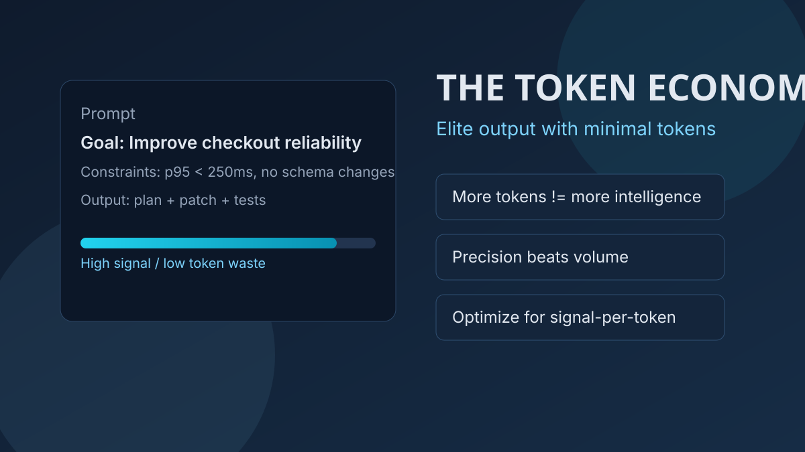
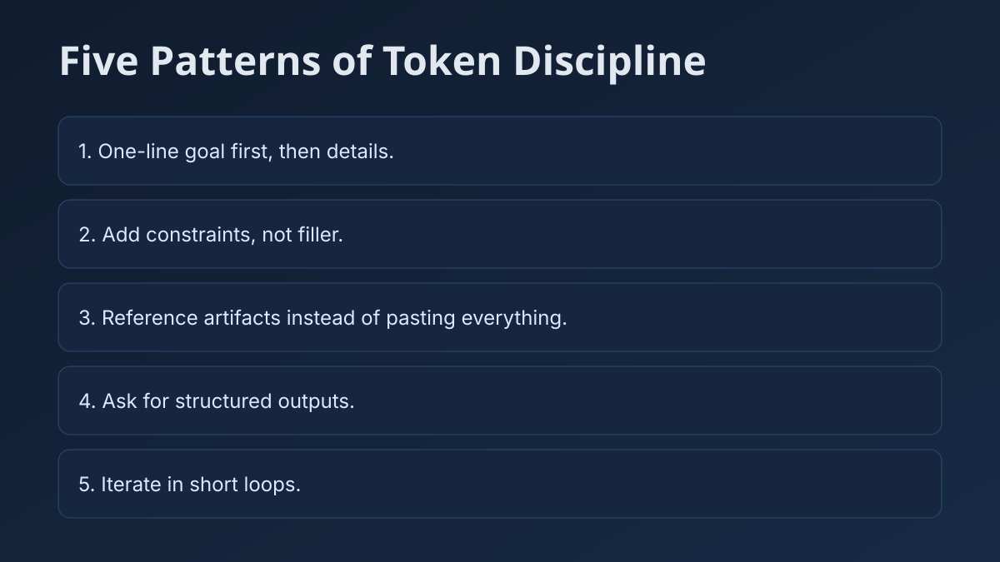

Most teams overpay for LLMs because they equate more tokens with more intelligence. They do not. Every model has a fixed context window and charges per token in both directions. Every extra paragraph you stuff into a prompt is both a cost line item and a piece of cognitive noise the model has to filter through before it gets to your actual question.

The skill that separates teams shipping reliable AI products from teams stuck in prompt-tuning purgatory is narrower than good prompting. It is maximizing useful signal per token.
Start with the right mental model
A token is the smallest chunk of text an AI can read or write, a whole word, part of a word, or even punctuation. Think of your prompt as a pizza: the whole pizza is your message, each slice is a token, and the model eats them one at a time. 100 tokens used just means the AI consumed 100 slices to understand and answer you.
In production, your typed question is often the smallest part of the bill. Spend is dominated by hidden system and policy prompts, long chat histories re-sent on every turn, and retrieved documents from RAG. Long sessions also force summary compression of old context, which quietly drops useful detail.
The teams that ship reliable systems treat context windows the way backend engineers treat memory: finite, expensive, and worth managing deliberately.
Bigger is not better
Some tokens sharpen intent. Others inject ambiguity, repetition, or filler. In practice, prompt compression often cuts cost dramatically while improving accuracy, because the model spends less capacity sorting noise before reasoning on the task.
Precision beats volume almost every time.

What precision looks like: five patterns
1. Start with one clear line
Example: Goal: refactor this service for testability.
2. Add constraints, not fluff
State stack, latency limits, security boundaries, and style rules directly.
3. Point to artifacts instead of pasting
Reference the location of code or docs and load only what is needed.
4. Ask for structure
Request outputs like plan, patch set, and test list so review cycles are faster.
5. Iterate in short loops
Revise a single section instead of restarting with a larger prompt each time.
Three tools shifting token economics
Claude Code
An agentic coding system that reads your codebase, plans across files, edits, runs tests, and iterates. Because context is fetched on demand, your prompt can stay short and constraint-driven. Structured asks reduce both tokens and ambiguity.
Aider
A Git-native terminal pair programmer with a repo map, a token-budgeted summary of major classes, functions, and relationships. Commands such as /add and /drop let you decide exactly what stays in context.
Cursor Composer
A spec-first workflow where you describe a feature once and receive coordinated multi-file changes with a review-friendly diff. Interaction shifts from line edits to feature-level outcomes.
The frontier is smart context selection
Context windows will grow, but bigger windows are not the strategic edge. The edge is selective context systems: repo maps, retrieval, token scoring, and caching that choose the right 0.1 percent of tokens per request.
Over time, token optimization will feel less like hand-written craft and more like compiler infrastructure: invisible, automated, and critical.
Elite LLM output does not come from elite token budgets. It comes from elite token discipline. Stop optimizing for volume. Optimize for signal.